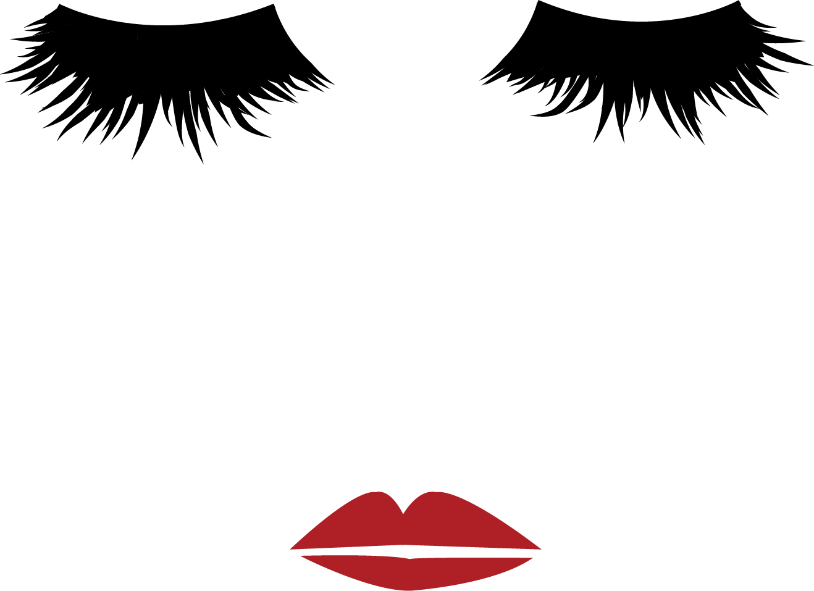
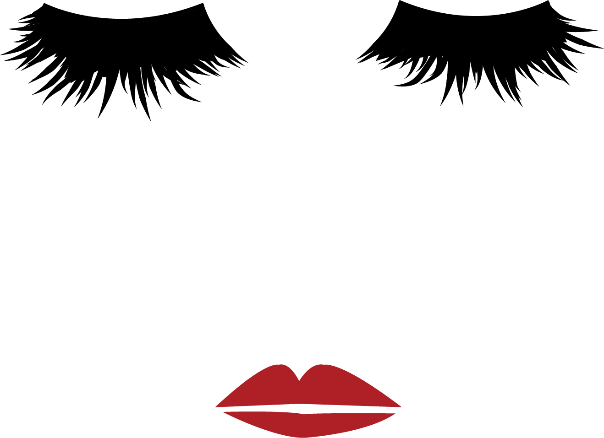

I recently graduated from The Iron Yard with a certification in Frontend Engineering and UI Design. I'm a graduate of the University of South Carolina with a Bachelor of Arts in Journalism and Mass Communications. I majored in Visual Communications and minored in Sport and Entertainment Management.